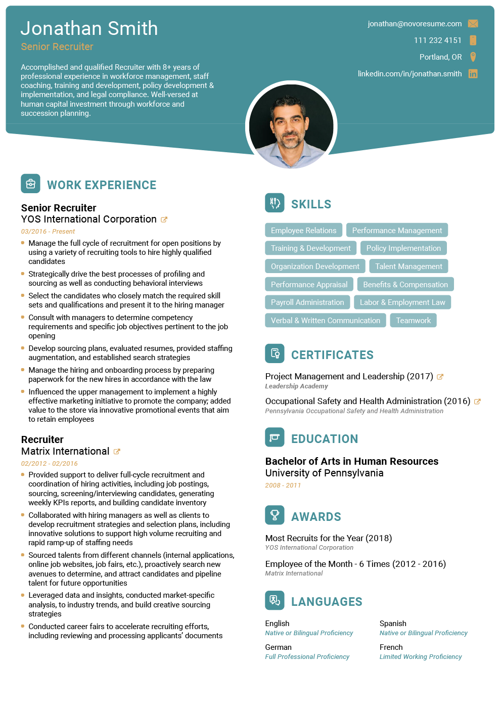
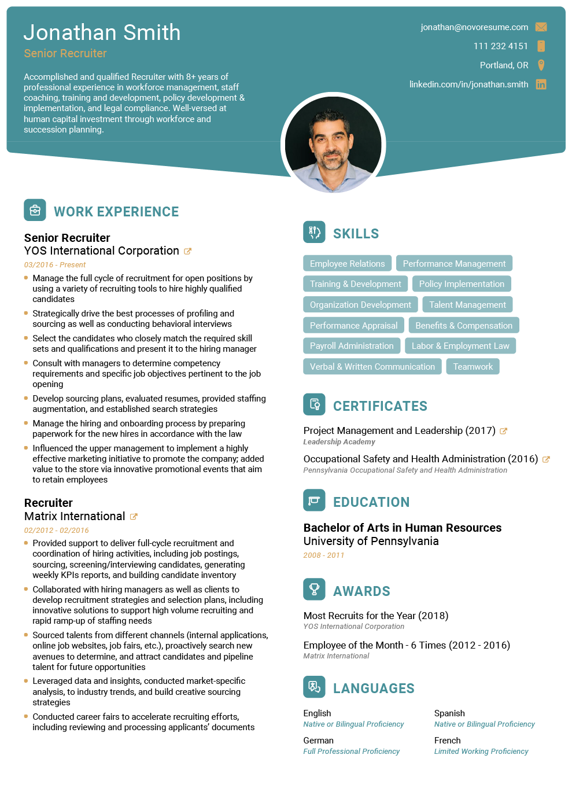
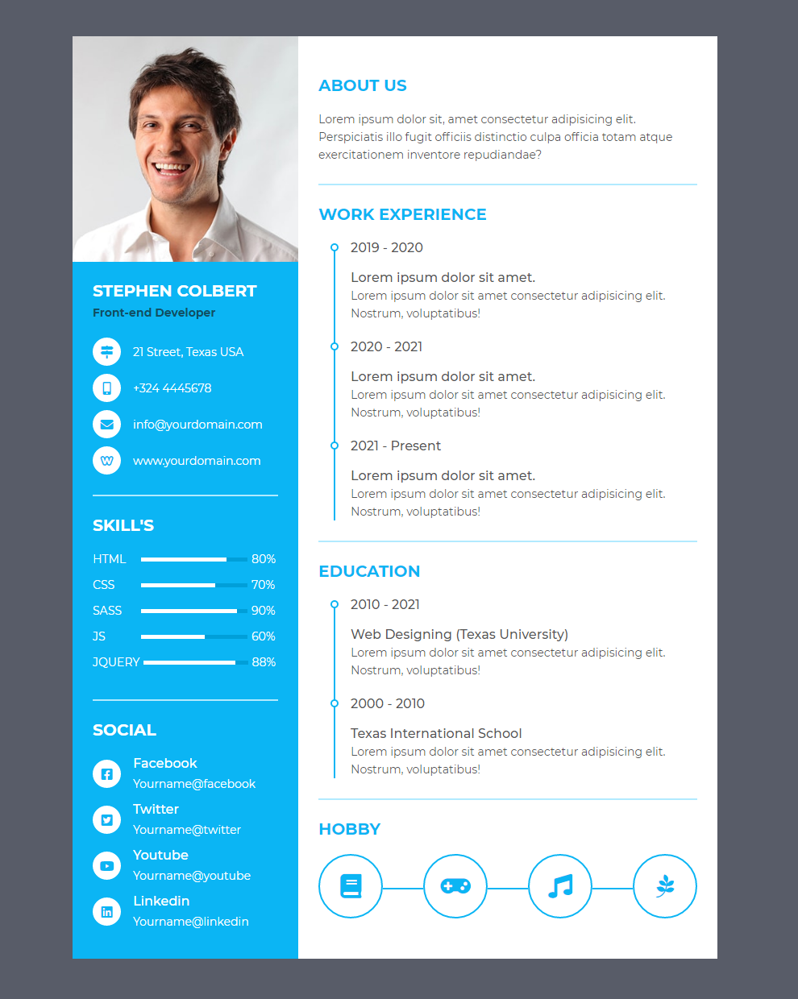
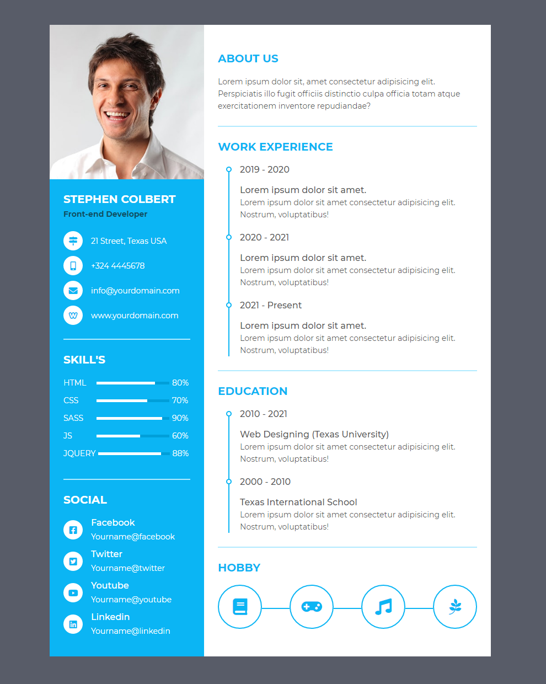

online resume builder
Only 2% of resumes make it past the first round. Be in the top 2%
Use professional field-tested resume templates that follow the exact 'resume rules' employers look for. Easy to use and done within minutes - try now for free!
Create My Resume


 

 



Use the best resume maker as your guide!
Getting that dream job can seem like an impossible task. We're here to change that. Give yourself a real advantage with the best online resume maker: created by experts, improved by data, trusted by millions of professionals.
Create My Resume
Make a resume that wins interviews!
Use our resume maker with its advanced creation tools to tell a professional story that engages recruiters, hiring managers, and even CEOs.

Resume writing made easy!
Resume writing has never been this effortless. Pre-generated text, visual designs, and more - all already integrated into the resume maker. Just fill in your details.

A recruiter-tested CV maker tool
Our resume builder and its pre-generated content are tested by recruiters and IT experts. We help your CV become truly competitive in the hiring process.